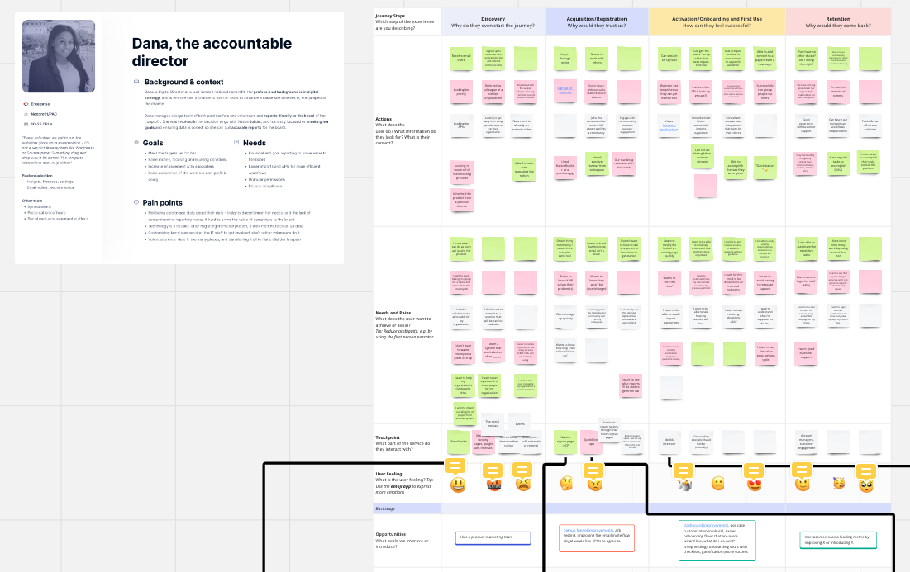
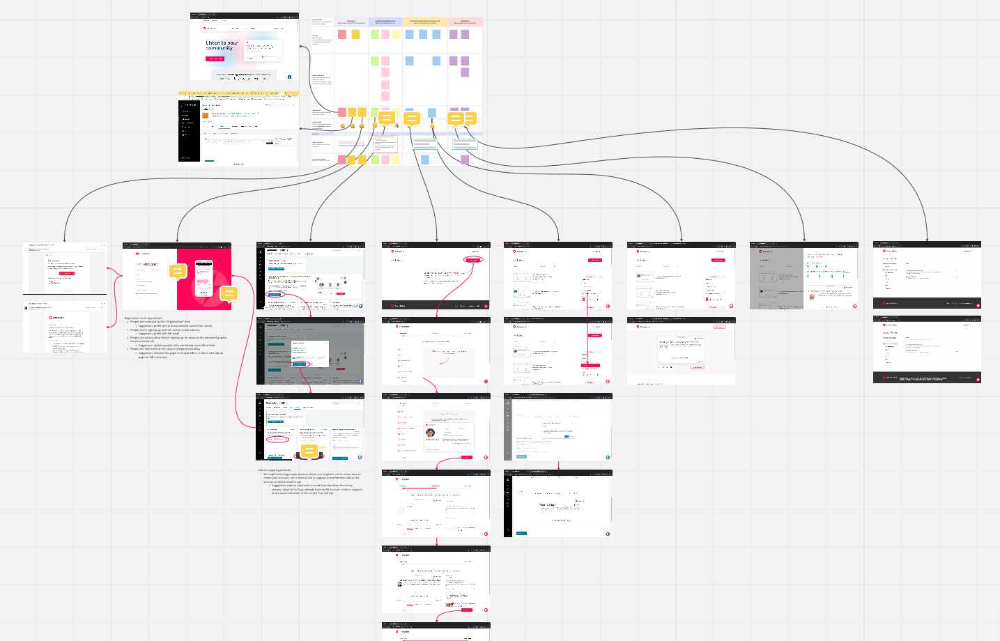

User Journey Mapping, 2022-2023
Skills
- Persona creation
- Workshop facilitation
Tools
- Miro
Artifacts
- User journey maps
Problem
I was the sole designer for the company when we hired a new designer, and she had trouble understanding the scope of our customer onboarding flows, which she was tasked with addressing.
Solution
I recruited two of our more experienced product managers to participate in a user journey mapping exercise for our primary product (NationBuilder). I prepared goals and agenda for the workshop and pre-populated a Miro board with a user journey map framework and a full sequential inventory of screenshots for the acquisition and activations steps.

During the workshop, I reviewed the goals of the session as well as the relevant personas, and walked the PMs (who were unfamiliar with user journey mapping) through the framework. After seeding the framework with sticky notes, we independently filled in the actions, pain points, etc. for each step of the journey. Then I led participants in a collaborative discussion and grouping exercise, and identified opportunities to improve the user experience.
As a separate project, I created a user journey map for our ancillary product, ActionButton, as I was the resident subject matter expert on the user experience.

Result
The resulting design artifacts have not only helped new employees understand the shape of our customers’ experience and opportunities for improvement, they’ve served as a springboard for subsequent cross-functional ideation workshops to address the needs and pain points we identified and documented.